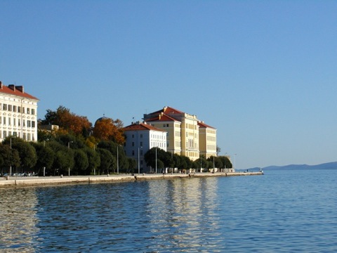

Interdisciplinary Summer School, Workshop and Round Table in Computational Linguistics, Cognitive and Information Science
22nd of August - 3rd of September 2010
at the
University of Zadar
organized by the
Linguistics Department
Department of Library and Information Science
Department of Psychology
in cooperation with the
Institute of Croatian Language and Linguistics

We invite all enthusiastic and motivated students, researchers, and colleagues with a strong interest in interdisciplinary approaches to language, cognition and computation to participate at the summer school, workshop and round table covering topics like:
- Language resources and digital annotation technologies and standards
- Computational approaches to language processing and analysis
- Computational modeling of cognitive aspects of language
Download flyers here:
Postal address:
University of Zadar
Linguistics Department
Obala kralja Petra Krešimira IV. 2
23000 Zadar
Croatia
Phone: ...